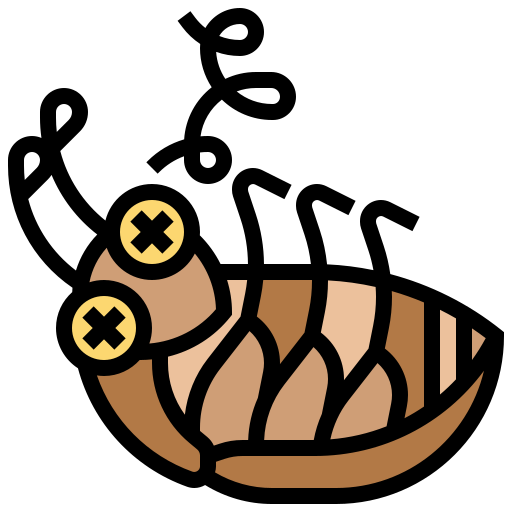

Acerca de mi
Soy un jóven de 23 años de nacionalidad peruana, actualmente estudio la carrera de Ing. Software con IA en Senati, me considero un chico muy entusiasta, minucioso y empeñoso en todo lo que hago. Además de codear, me fascina producir música electronica desde los 12. Si deseas contactarte conmigo, puedes hacerlo en los apartados correspondientes, espero te agrade mucho mi web.
CONTACTOHabilidades
Destaco mucho creativamente gracias al uso de herramientas complementarias como Photoshop, Maxon Cinema 4D, Premiere, entre otros mas.
Esto me permite darle un valor especial a los trabajos que se me soliciten a futuro, es muy importante hoy en día aprender muchas cosas variadas, es un plus para cualquier persona que se presente a algun trabajo.

Experiencia
Por el momento aun soy estudiante, este 2do ciclo aprendí muchas cosas gracias a mi docente, como tambien por voluntad propia, siendo autodidacta y dedicandole muchas horas de estudio al desarrollo web.
Espero y sé, que con el transcurrir del tiempo aprenderé muchas cosas mas y perfeccionaré mis skills.
Trabajos y Diversión

C S S 3
P Y T H O N
P H O T O S H O P
M E
STAFF
Julio Mau | Satoru
Admin de la página
Me gusta comer doritos, jugar al Fortnite y aprender cosas nuevas.

El cucaracho Carmelo
Ingeniero de la vida
Literal, no hago nada en la página, me gusta picotear a las personas de noche, el trauma de Julio tlv, team calor, aveces vuelo y asusto, soy un personaje ficticio.